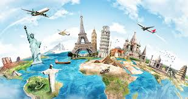
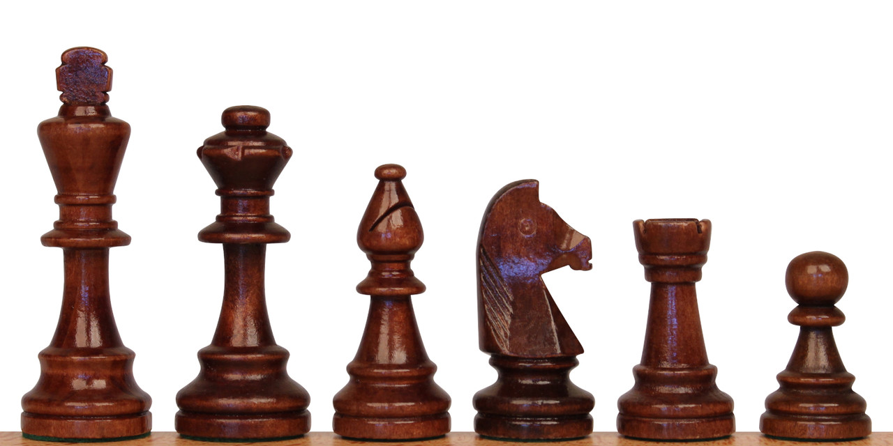
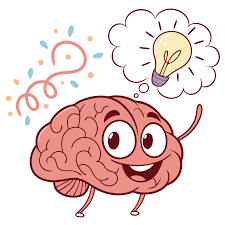

 My name is Toby Chen and I was born in San Diego California. My mom is from Hong Kong and my dad is from Taiwan. I can speak 3 languages and have a dog named Biscuit. I like to travel and my favorite place to go is Taiwan. I would like to go to Europe one day and see all the various landmarks and monuments there. My favorite subjects include math, computer science, and physics because I love to solve challenging problems and work out my brain.
 I like to engage my mind and body a lot so most of my hobbies include solving problems or exercising. One of my hobbies is playing Chess as it fosters my strategic thoughts and keeps me on my toes. I also love swimming for the physical workout and relaxing in the water. Hiking is an adventurous outing I use to reset my energy by connecting with nature and diverting my attention from stressors. Lastly, I’m a big eater and I love trying new foods, especially Asian cuisine.
 I’m a naturally curious person who loves learning new things and exploring different ideas whenever I can. Meeting new people is something I really enjoy, and I’m always excited to make new friends. At the same time, Im also very competitive, so I will try my best to be the best at everything, especially when competing against others. Some competitions I do are Chess and Math competitions. I also like finding creative ways to solve problems, which makes even ordinary tasks feel more interesting. Overall, I’d say I’m someone who’s curious, determined, and always looking to make the most out of everything